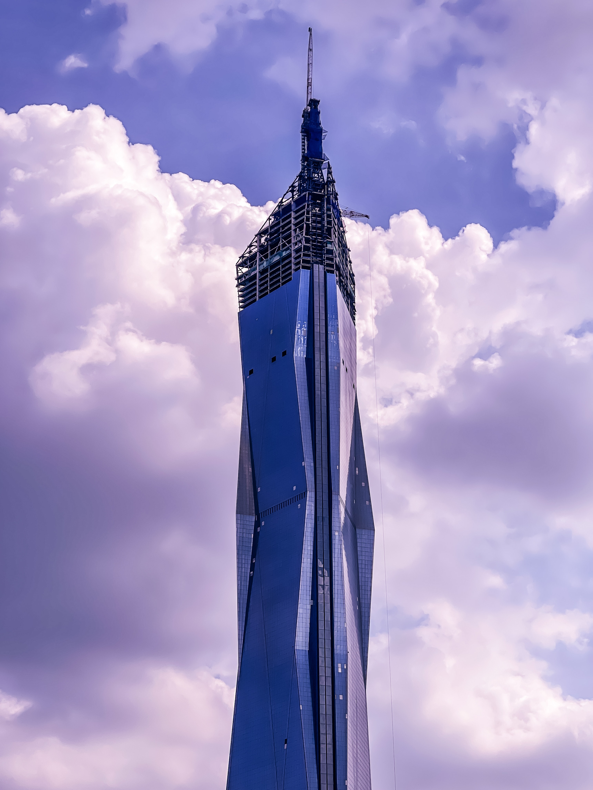
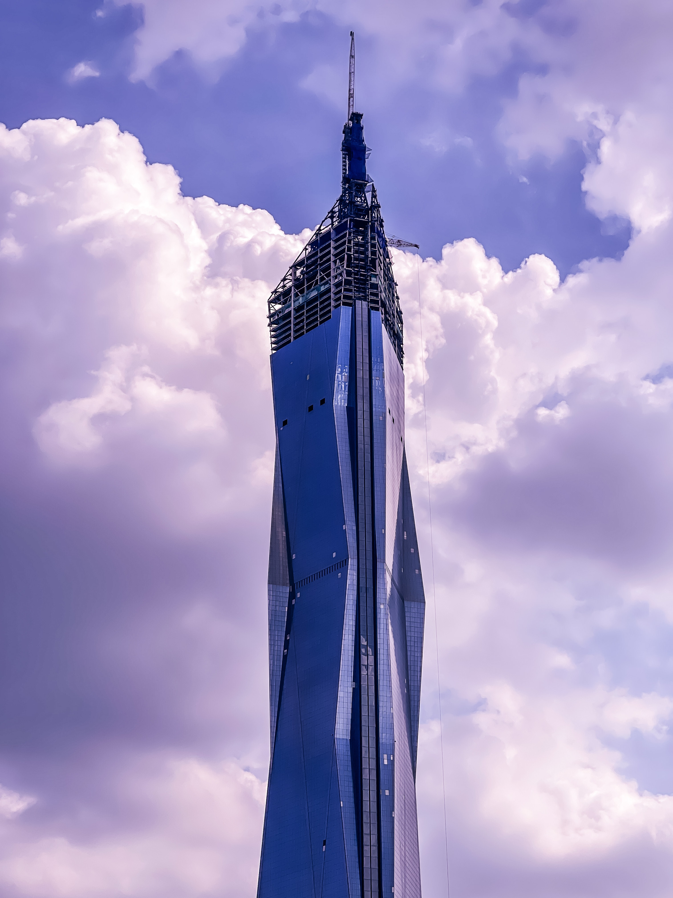

¿Que es un rascacielos
Dos son los requisitos para considerar a un edificio como rascacielos: tener al menos 150 metros de altura (500 pies) y contar con, al menos, 30 niveles o pisos. Los primeros fueron construidos allá por finales del siglo XIX, siendo el inicio del siglo X uno de los momentos claves en su desarrollo.
¿Sabías que China es el país con más rascacielos del mundo? Cuenta con 1 edificio de más de 600m de altura, 66 con más de 300m, 686 con más de 200m y 1873 con más de 150m. A la hora de considerar otros países podemos mencionar a Emiratos Árabes Unidos, Estados Unidos o Arabia Saudita (si bien este último destaca más por la altura de los mismos que por el número total).
Los rascacielos mas altos
 
